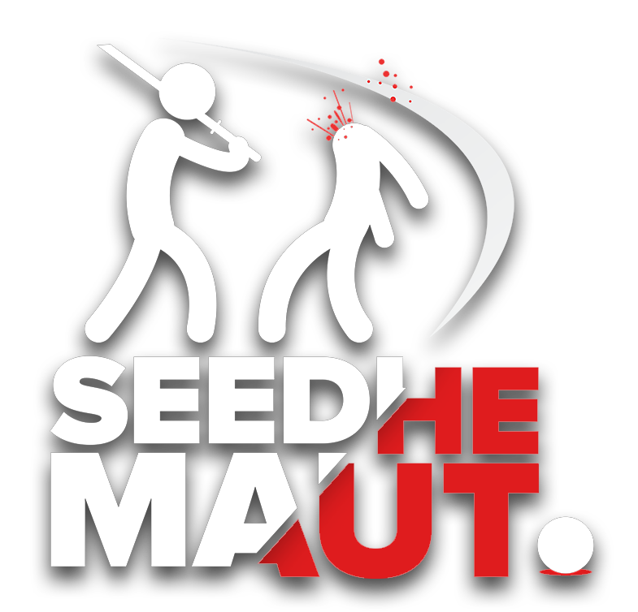

Seedhe Maut is one of India’s most influential hip-hop duos, known for pushing boundaries with their raw lyricism, hard-hitting flows, and authentic storytelling. Formed by Encore ABJ (Abhijay Negi) and Caldin (Vaid), the Delhi-based rappers have built a cult following through their sharp wordplay, thought-provoking narratives, and energetic performances. Their music bridges underground grit with mainstream appeal, often tackling themes of youth culture, social realities, and personal struggles. Over the years, Seedhe Maut has carved out a unique space in the Indian rap scene, collaborating with leading artists, experimenting across genres, and staying true to their roots. With projects like Bayaan, Naachne Ka Shaunq, and Lunch Break, they’ve proven themselves as fearless voices of the new generation—representing ambition, rebellion, and authenticity in every verse. Seedhe Maut is not just a rap group; it’s a movement that resonates with anyone chasing dreams against all odds.
SOCIALS